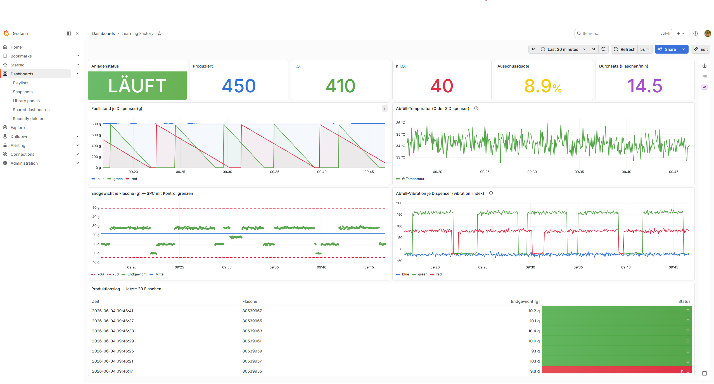
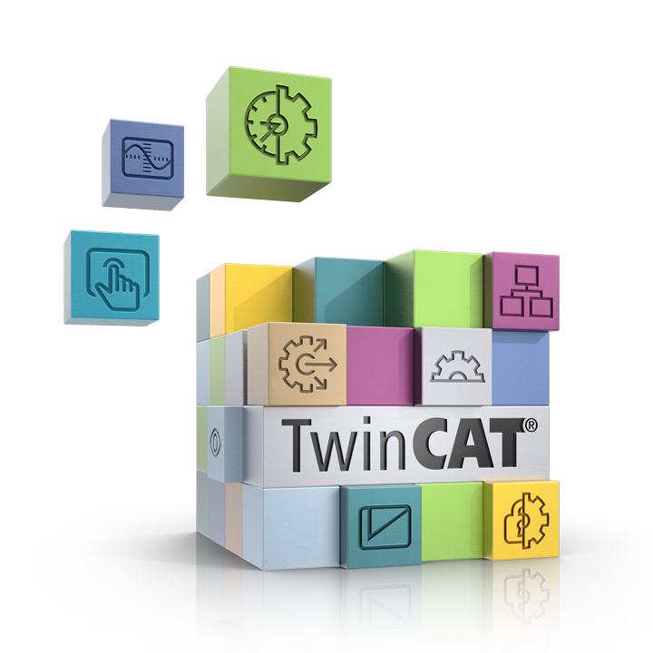

Zeitreihen-Datenbanken & Visualisierung (Industrie-Ausblick)
Ausblick / Industrie — kein Pflichtstoff für Aufgabe 12.1.2. Die Pflicht bleibt CSV + Live-Plot. Diese Seite zeigt, womit dieselben Daten in der Industrie gespeichert und visualisiert werden — und warum. InfluxDB und Grafana sind dort die Bonus-Stufen der Aufgabe.
Auf der vorigen Seite haben wir die Daten in einer CSV abgelegt. Das genügt fürs Bestehen —
aber sobald dauerhaft, mit hoher Frequenz und über lange Zeiträume gespeichert werden
soll, greift die Industrie zu spezialisierten Werkzeugen. Genau das bauen wir als
Schaufenster: einen Edge-Server, der MQTT → InfluxDB → Grafana rund um die Uhr fährt.

Warum Zeitreihendaten besonders sind
Sensordaten einer Anlage haben einen sehr eigenen Charakter:
- Append-only: Es kommen ständig neue Punkte hinzu; alte werden so gut wie nie geändert.
- Zeit-indiziert: Jeder Wert hängt an einem Zeitstempel; fast jede Abfrage ist eine Zeitfenster-Frage („Mittelwert der letzten 5 Minuten", „Temperaturverlauf heute").
- Hohe Frequenz & Volumen: Viele Sensoren × hohe Abtastrate = sehr viele Zeilen.
Eine Zeitreihen-Datenbank (Time Series Database, TSDB) ist genau dafür gebaut: schnelles Schreiben (Append), effizientes Komprimieren über die Zeitachse und eingebaute Zeitfenster-Aggregationen (Mittelwert, Min/Max, Downsampling).
Zeitreihen-DB vs. relationale vs. dokumentbasierte DB
| Typ | Beispiele | Stärke | Wann |
|---|---|---|---|
| Relational | SQLite, PostgreSQL | feste Tabellen, Joins, Transaktionen | strukturierte Stammdaten, Aufträge, Berichte |
| Dokumentbasiert | TinyDB, MongoDB | flexible JSON-Dokumente, kein festes Schema | heterogene Daten, schnelles Prototyping |
| Zeitreihen (TSDB) | InfluxDB, TimescaleDB | Append + Zeitfenster-Aggregation + Komprimierung | Sensor-/Maschinendaten |
Das knüpft an die Hot/Warm/Cold-Einteilung der vorigen Seite an: InfluxDB ist ein typischer Warm Storage — schnell genug für Dashboards, dauerhaft genug für Analysen.
Das InfluxDB-Datenmodell
InfluxDB speichert jeden Messpunkt nach demselben Schema:
measurement,tag1=wert,tag2=wert field1=wert,field2=wert timestamp
- measurement — was gemessen wird (z.B.
dispenser,temperature). Wie eine Tabelle. - tags — indizierte String-Metadaten zum Filtern/Gruppieren (z.B.
color=red). - fields — die eigentlichen Messwerte (Zahlen), nicht indiziert.
- timestamp — der Zeitpunkt (hier: Unix-Sekunden aus dem
time-Feld der Anlage).
Für unsere Learning Factory sieht ein Punkt z.B. so aus:
dispenser,color=red fill_level_grams=638.6,vibration_index=102.8,bottle="80290512"
■ measurement — was gemessen wird ■ tag — indiziert, zum Filtern/Gruppieren ■ field — die Messwerte (nicht indiziert) timestamp — der Zeitpunkt
Hinweis: Das InfluxDB-Feld
vibration_index(Unterstrich) ist dasselbe Signal wie das MQTT-JSON-Feldvibration-index(Bindestrich, siehe Datenspeicherung) — beim Schreiben in InfluxDB wird aus dem Bindestrich ein Unterstrich.
Die wichtigste Design-Regel: Kardinalität
Tags sind für niedrig-kardinale Werte, Felder für hoch-kardinale.
Jede eindeutige Kombination aus measurement + Tags erzeugt eine eigene Serie. Packt man einen Wert mit vielen verschiedenen Ausprägungen in einen Tag, explodiert die Anzahl der Serien (hohe Kardinalität) — und damit der Speicher-/RAM-Bedarf.
Konkret bei uns: Die bottle-ID ist für jede Flasche anders (hoch-kardinal). Sie gehört
deshalb in ein Feld, nicht in einen Tag — sonst bekäme jede Flasche eine eigene Serie.
Die Dispenser-Farbe dagegen kennt nur drei Werte (red/blue/green) und eignet sich
perfekt als Tag.
(Das passt zur Notiz auf der vorigen Seite, dass bottle ein String ist: hier wird sie als
String-Feld abgelegt — Schlüssel, nicht Rechengröße.)

color ein Tag sein darf, bottle aber nicht: Jede Tag-Ausprägung erzeugt eine eigene Zeitreihe.Hinweis: InfluxDB 3 hebt diese Kardinalitäts-Grenze technisch auf. Im Schaufenster läuft aber InfluxDB 2.x, wo die Regel klassisch gilt — und das Prinzip „Identifikatoren in Felder" ist auch sonst eine gute Angewohnheit.
Referenzarchitektur: MQTT → InfluxDB → Grafana

MQTT → Collector → InfluxDB → Grafana. Die Datenquelle ist nur über den Broker angebunden — wie eine echte Maschine vom Auswertesystem entkoppelt.Anlage / Simulator ──publish──► MQTT-Broker ──subscribe──► Collector ──► InfluxDB ──► Grafana
(SPS, Sensoren) (schreibt Points) (TSDB) (Dashboard)
- Broker: verteilt die Nachrichten (vergisst sie aber — nur der letzte Retain-Wert bleibt).
- Collector: abonniert die Topics und schreibt jeden Wert als Point in die TSDB.
- InfluxDB: speichert die Zeitreihen dauerhaft.
- Grafana: fragt InfluxDB ab und zeigt Live-Dashboards.
Im Schaufenster laufen Collector, InfluxDB und Grafana als drei Docker-Container auf einem Edge-Server. In einer echten Anlage wäre das ein Industrie-PC bzw. Edge-Gateway im Schaltschrank oder Serverraum, und die Datenquelle wäre die Maschine selbst (SPS + Sensoren). Bei uns übernimmt ein einziger kompakter Rechner beide Rollen — er simuliert die Anlage und hostet den Stack. Entscheidend bleibt: der Simulator (die „Anlage") ist mit dem Stack nur über den Broker verbunden — genau wie eine echte Maschine vom Auswertesystem entkoppelt ist.
Edge Computing: das Gateway im Kleinen
Der Edge-Server macht vor Ort, was in echten Anlagen ein Edge-Gateway tut: lokal sammeln, speichern und visualisieren, nah an der Maschine, 24/7 — ohne dass alle Rohdaten erst in die Cloud müssen.
Daten abfragen: Flux
InfluxDB 2.x wird mit der Abfragesprache Flux abgefragt — als Pipeline (|>), ähnlich wie
man Daten in Pandas durch Schritte schiebt. Beispiel „Füllstand der letzten 15 Minuten, in
30-Sekunden-Fenstern gemittelt":
from(bucket: "learning_factory")
|> range(start: -15m)
|> filter(fn: (r) => r._measurement == "dispenser" and r._field == "fill_level_grams")
|> aggregateWindow(every: 30s, fn: mean, createEmpty: false)
Solche Aggregationen über Zeitfenster sind der Grund, warum eine TSDB hier mehr leistet als eine CSV: Man bekommt sie geschenkt, statt sie selbst zu programmieren.
Visualisierung: Grafana
Grafana ist der De-facto-Standard für Zeitreihen-Dashboards. Stärken im Industrieeinsatz:
- Provisioning as Code: Datenquellen und Dashboards liegen als versionierte Konfigurationsdateien im Repository — reproduzierbar statt „im Browser zusammengeklickt".
- Template-Variablen: ein Dashboard für viele Anlagen/Linien, statt eines pro Maschine.
- Alerting: Schwellwerte und Benachrichtigungen direkt auf den Live-Daten.
Ein typisches „Learning Factory"-Dashboard kombiniert Status- und Kennzahl-Kacheln (Anlagenstatus, produzierte Flaschen, i.O./n.i.O.-Anteil, Ausschussquote, Durchsatz) mit Prozess-Zeitreihen (Füllstand je Dispenser, Temperatur, Endgewicht mit Kontrollgrenzen, Vibration) und einem Produktionslog je Flasche — alle live aus demselben Datenstrom, der in dieser Lehrveranstaltung über MQTT hereinkommt.

Best Practices — was wir hier bewusst richtig machen
- Retain nur auf Status/Config, nicht auf Telemetrie. Das
recipe-Topic ist retained (ein neuer Subscriber kennt sofort das aktuelle Rezept); die Messwerte sind es nicht — sonst bekäme man einen alten Wert als „aktuell" untergeschoben. (In der Kurs-Aufgabe 12.1.1 setzen wir Retain bewusst auf alle Topics — so sind die Werte im MQTT-Explorer auch dann sichtbar, wenn die SPS gerade nicht sendet. Das ist eine didaktische Vereinfachung; industriell bliebe hochfrequente Telemetrie un-retained.) - QoS passend wählen. QoS 0 (höchster Durchsatz) für unkritische, hochfrequente Telemetrie; QoS 1 (mindestens einmal) für wichtige Ereignisse.
- Kardinalität im Griff behalten: Identifikatoren (
bottle) in Felder, niedrig-kardinale Metadaten (color,dispenser) in Tags. - Ein measurement je Entitätstyp (
dispenser,temperature,final_weight,ground_truth,recipe) statt alles in eine „Tabelle". - Retention & Downsampling: alte Rohdaten automatisch verfallen lassen oder verdichten (z.B. Minuten- statt Sekundenwerte für die Langzeit-Historie).
Bezug zu Beckhoff / TwinCAT
Der Weg von der SPS an den Broker ist in der Beckhoff-Welt nativ vorgesehen:

- TF6701 – TwinCAT 3 IoT Communication (MQTT): der Funktionsbaustein
FB_IotMqttClientpubliziert Laufzeitvariablen direkt aus der Steuerung per MQTT — mit Wahl von QoS und Payload und TLS-Absicherung. Das ist genau die Brücke, die auf der Seite TwinCAT MQTT-Client gezeigt wird. - Beckhoff empfiehlt selbst InfluxDB + Grafana zur Archivierung und Visualisierung der so gesendeten Daten — unsere Stack-Wahl ist also kein Zufall, sondern der dort vorgeschlagene Weg.
- Native Alternativen (falls jemand fragt „warum nicht alles bei Beckhoff?"): TF6420 (Database Server) und TwinCAT Analytics decken Speicherung/Auswertung innerhalb des Beckhoff-Ökosystems ab.
Wo die Industrie hingeht
- TIG-Stack & Telegraf: Der verbreitetste Aufbau heißt TIG = Telegraf + InfluxDB + Grafana. Telegraf ist ein konfigurierbarer Collector ohne eigenen Code (Plugins für MQTT, OPC UA, Modbus …). Unser Python-Writer ist die transparente Lehr-Variante; in Produktion ersetzt oft eine Telegraf-Konfiguration den Code.
- Unified Namespace (UNS): ein Broker als „Single Source of Truth" mit semantisch
geordnetem Topic-Baum (Enterprise → Site → Area → Line → Cell). Unser
aut/SoSe26/learning_factory_simulation/…ist ein Mini-UNS. - Sparkplug B: eine Spezifikation über MQTT mit standardisiertem Namespace, Protobuf-Payloads, Geburts-/Todes-Zertifikaten der Geräte (Zustandsbewusstsein) und Store-and-Forward — für große, herstellerübergreifende Anlagen.
Bezug zur Aufgabe 12.1.2
InfluxDB ist eine der genannten Bonus-Datenbanken, Grafana eine der Bonus-Dashboard- Optionen. Für die meisten reicht CSV + Live-Plot — dieser Stack ist das „obere Ende / was die Industrie real einsetzt". Wer ihn ausprobiert, sieht denselben Datenstrom einmal ganz unten (CSV) und einmal ganz oben (TSDB + Grafana) — und versteht, warum es die spezialisierten Werkzeuge gibt.